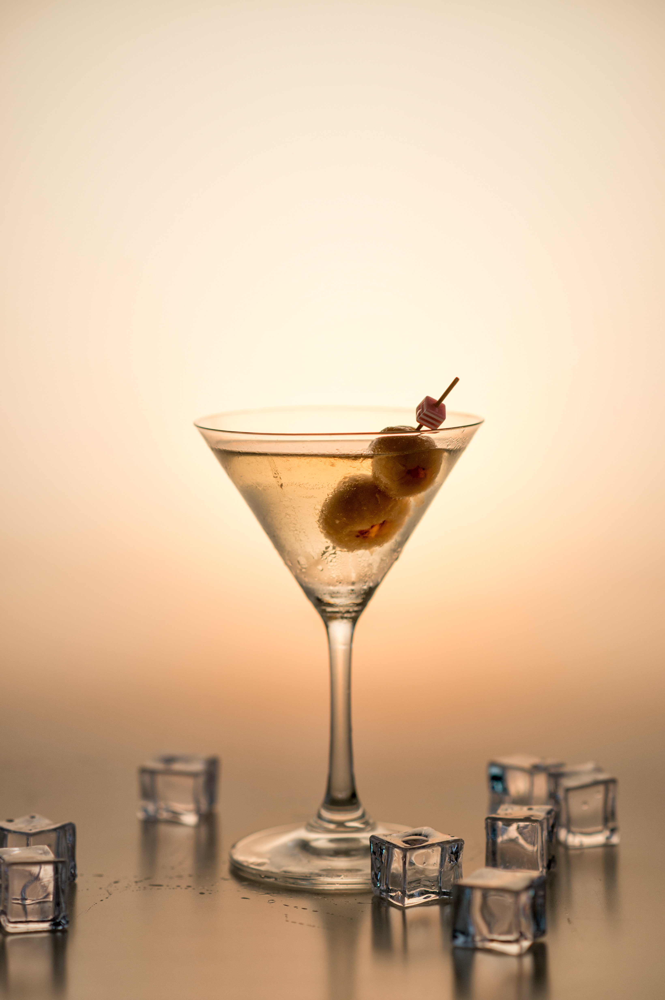

Martini

Dirty Martini
A dirty martini is the perfect cocktail for olive lovers. It can be made with vodka or gin and served on the
rocks or chilled.
Ingredients
- 6 fluid ounces vodka
- 1 dash dry vermouth
- 1 fluid ounce brine from olive jar
- 4 stuffed green olives
Steps
- Gather all ingredients.
- Stir together vodka, dry vermouth, brine, and olives in a mixing glass. Pour into a glass or shaker with
ice.
- Serve on the rocks, or strain into chilled cocktail glasses.
- Enjoy!
Sources
Dirty
Martini - Recipe by SCOTT HOLLERN